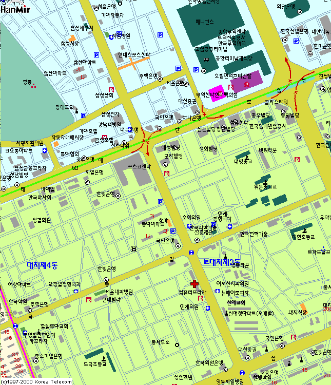

Man Plus : 02-567-9870
지도 설명
중앙 하단 컴퓨터 프라자 옆 빨강 십자가가 있는 곳입니다.
삼성역과 선릉석 사이에 있는 포스코 센타 빌딩을 먼저 찾습니다.
테헤란로 포스코 빌딩 3호선 대치역쪽으로 내려오다가 조그마한 사거리
(대치사거리)를 직진, 40미터 정도 더 가면 우측에 위치한 건물 8층에 있으며
Man 이라고 아주 큼직한 네온 사인이 옥상층 외벽에 붙어 있어서 찾기 쉽습니다.
정다운 주유소 가기 20미터전.
